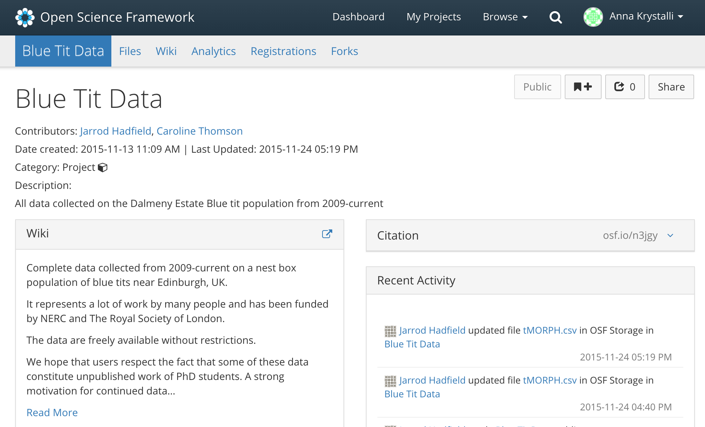

Symposium summary:
‘Challenge of our generation: reproducible, transparent and reliable science’.
ISBE 2016, University of Exeter, UK
When approached to help organise a post-conference symposium on reproducibility in Science at the International Symposium on Behavioural Ecology E I jumped at the opportunity. The symposium was the brainchild of Malika Ihle and Isable Winney, both post-docs here at the University of Sheffield at the time, and the idea was to take time to take stock of the state of the field with respect to reproducibility, hear from people praticing new and provide participants with the opportunity to learn some new skills. We managed to also rope in Mike Croucher EPSRC Research Software Engineering Fellow here at Sheffield to help put together some training material.
My own interest in the subject spurs from a deep love of working with data and past experiences outside academia. Working as a quality assurance auditor for a contract research organisation operating to OECD good laboratory practices, I got first hand experience of the opportunity for human error and the lengths required to assure quality of results. In my next job as a brand co-ordinator for an extreme sports equipment distributor, I continued to suffer the consequences of errors in data. In the grand scheme of things, it was of course not the end of the world if the item showing on the system as last in stock and promised to a dealer for next day delivery was in fact out of stock. But it was pretty awkward having to ring them and tell them!
Don’t get me wrong, I love the creativety afforded in academia. I remember thinking when I first started my phd:
‘Wow, love the creative freedom in academia!’
soon though followed by:
‘Hmmm, no one’s really checking anything. Bit sketchy…’
Since then, I feel lucky to have fallen in love with coding during my PhD in macroecology and have been freelancing since, providing what might be classed as research data engineering.
So I agreed to prepare a couple of workshops and the tools and skills I have found most usefu.
First thing to do was secure some funding as my freelance was not cover my time or costs. Luckily Mozilla Science Lab stepped in to support me and supply great swag.
…to the symposium
From what I gathered from twitter the 6 day conference had been a great success. We headed down for the last day of the gathering the post-conference symposium. We were excited to arrive to great facilities for the workshops
Off to exter with @annakrystalli to spread the word about git, @rstudio and rmarkdown to ecologists.
— Mike Croucher (@walkingrandomly) August 2, 2016
roots of the problem
The day kicked off with some much needed self-reflection, through a series of talks on the many and diverse facets of the reproducibility crises.
Self-deception
Shakti Lamba kicked off with tales of deception in our perception of each other’s abilities. discussing their findings in a paper investigating the role of self-deception evolved to facilitate the deception of others of the first direct evidence suggesting that
Overconfident individuals are overrated by observers and underconfident individuals are judged by observers to be worse than they actually are. Our findings suggest that people may not always reward the more accomplished individual but rather the more self-deceived. Moreover, if overconfident individuals are more likely to be risk-prone then by promoting them we may be creating institutions… more vulnerable to risk.
fooling oneself helps fool others.
And if careers are built on convincing others of the value of your work, it becomes apparent how incentives to full yourself become selected for.
the trap of false-positives
Picking up where Shakti left off, discussing the many ways in which modern scientists have at our disposal to fool ourselves into type I error - false positive results, individually , With statistical significance as the holy grail of publication, practices inflating overall type error are inadvenrtntly encouraged while studies containinig null results are ignored. These include:
- p-hacking
- HARKing
- starting with (or changing to) a less likely hypothesis (since an unlikely hypothesis should be tested with higher power / to a more stringent threshold),
- increasing our number of samples in an attempt to get to a significance threshold,
- using researcher degrees of freedom when selecting how to run an analysis,
- committing data torture with over-fitted models, model fishing, and HARKing (hypothesis after results…),
- having non-independent data.
It seems our overconfidence in ourselves might be leading to an overall underconfidence as a sector as whole.
Forstmeier: data torture and researcher df massively inflates type 1 error #ISBE_Exeter #openscience @annakrystalli pic.twitter.com/6gjQssnSFc
— Isabel Winney (@IsabelWinney) August 3, 2016
blinded by not blinding
Luke Holman focused on their examination of another common form of self-deception, observer bias. Such reseracher effects…
… are strongest when researchers expect a particular result, are measuring subjective variables, and have an incentive to produce data that confirm predictions.
In their study of the extent of working ‘blind’ to guard againt such researcher effects however, they found evidence that blind protocols are uncommon in the life sciences. On top of that, nonblind studies tended to report higher effect sizes and more significant p-values.
research workflow domino fail
Finally Mike talked about his view on current research workflows from a software engineering perspective. Explained the reasons we should be increasingly minding the state of our computational workflows. The idea that workflows should be set up like dominos and flow nicely when set into motion. A solid workflow automation setup is far more robust, efficent and transparent.
Understandably, as a result of often limited formal training in techniques or standards, our workflows look more like this, often getting stuck and needing manual interventions. This inevitably increases opportunity for error or loss of provencance and can often result in not asking our questions properly!

Highlights the need for increased computational training and support, particularly through an emerging role for RSEs. Ultimately, the mission is to empower researchers with skills to harness rather than be buried by technological advances
PROBLEM: I AM AN IDIOT AND WILL MAKE MISTAKES
(Partial) Solutions
- Automate (aka learn to program)
- Write code in a (very) high-level language
- Get some training
- Use version control
- Get a code buddy (Maybe an RSE!)
- Share your code and data openly
- Write tests
The picture is becoming clear that the elements of the reproducibility crisis reflect the fact that a fallable species is practiciing science within a framework of highly risky incentive system:
This dynamic requires no conscious strategizing—no deliberate cheating nor loafing—by scientists, only that publication is a principle factor for career advancement. (Smaldino & McElreath, 2016)
These incentives are not lost on the audience with discussions inevitably returning to the costs of reproducibility versus the extrinsinc benefits.
We blind ourselves because we need to convince others that our work is important to survive. It’s not our fault but we need to start making steps to rectify it. Reproducbility as a means to encourage transparancy, reliability
collectively it manifest themselves into bad and worrying unreliable science, casting doubt on our paradigs, reducing our confidence. resulting in the reproducibility crisis.
practical solutions
While we couldn’t really address external elements of broken insentive structure, we really wanted participants to hear experience of people who had for various reasons, began to implement. As such we hoped others would see practical applications of solutions and discover the intrinsict value of reproducibility, private reproducibility.
and leave with some ideas and tools to start exparimenting.
unblinded by seeing
Sinich Nakagawa gaves a demo of the features of the OSF framework. Created by the Center for Open Science, a non-profit dedicating to supporting researchers in more reproducibility, the OSF is an online portal enabling researchers to centralise and manage project materials throughout project life cycle.
I’d heard of the initiative but admittedly I had not tested it out yet. Inspired by the demo, it was the first thing I tried out by setting up my last two projects. took me about 5 minutes to gather the materials from the github and googledrive folders that held the data and code for each and and half an hour to set them both up with wikis and couldn’t wait to share it with my collaborators.
open data and the non-end of a postgrad’s world
- caroline

Talked about her experience opening up a long term data set on blue tits, 6 months before the end of here PhD. The motivation echoed many of the calls in the morning sessions: to reduce type 1 errors.
While she highlighted the She outlined the research data management effort required to maintain the material improves reproducibility
it may not have flown off the shelves but
the article is the advertising
- martin really demonstrated the importance of transparency and the importance of the data and code versus the paper. First he doubted himself, but could not find the source of the discrepancy in his analysis. He approached the others who supplied the data and spss code. A single line of code, ommited form the description of the analysis in the paper violated assumptions. When corrected the effect disappeared.
Made me think of the quote, the paper is the advertisment,
An article about computational science in a scientific publication is not the scholarship itself, it is merely advertising of the scholarship. The actual scholarship is the complete software development environment and the complete set of instructions which generated the figures.
Controversial? Maybe, but I tend to agree.
It seems science is geared towards curating the advertisement. Now Martin promotes openess again as an intrinsict requirement of confidence.
Ultimately it allows us to assess claims on what researchers do rather than what they say
research workflow domino win
Malika
The theme emerging is:
PREPARE IT TO SHARE IT!
The very move to open some code up resulted in significant improvement and refinement of functionality and code and picking up a number of errors. The benefits in terms of increased functionality and efficiency very quickly reveal the intrinsict value of these practices, providing therefore and intrisic incentive. Ulimately, whie I understand arguments about the effort required, they will just never convince me that it’s not worth making the effort. Has been so clearly demonstrated that there’s now going back. If you’re unsure whether they’re worth the effort I just suggest you start super small and just try to implement one thing. I’m sure you’ll be convinced.
hand’s on skills
While ppropsing these skills as solution to some of the reproducibility values we believe they also help to change the culture, by making it easier for us to share and communicate our work.
The workshops were there to give attendeeds some skills so that could go off and do something about it. The sessions focused on giving participants skills to version control and collaborative coding through github, literate programming through markdown and of using these skills through Rstudio.
Github through RStudio
Heads down and working hard at @walkingrandomly RStudio and Git workshop at #ISBE_Exeter #openscience @annakrystalli pic.twitter.com/pjVVvVTmHp
— Isabel Winney (@IsabelWinney) August 3, 2016
Introduction to Rmarkdown
Collaborative github through RStudio
In the last practical session of the day, we tackled collaboartive use of github. The task for the session was for participants to fork and clone a repo, create a file where they supplying parameters definining brownian evolution of a trait for their species, commit push and merge to the original repo. Once all species parameters were collated in the original repo, we plotted them all up together!
focus groups
last thoughts
The most encourgaing moment of the whole day came when Sajesh and …, two masters students that had sat through the whole day enthusiastically, approached us at the end and said:
‘That was great! We should be learning this stuff as undergraduates!’
Thank you @IsabelWinney @annakrystalli @walkingrandomly and Malika!!! Had the most amazing day!! Superbly designed symposium!!#ISBE_Exeter
— Sajesh Vijayan (@sajeshksv) August 3, 2016
And I totally agree! I think we totally underestimate what a young generation of scientists, armed with web research skills, set to higher standards from the beginning of their carers will be able to achieve. They will be teaching us!
As our whole world turns more data driven, these skills are increasing important, so I feel we have a duty to our students to better prepare them and empower their contribution to the workforce while also promoting better analytical and working standards to the economy.